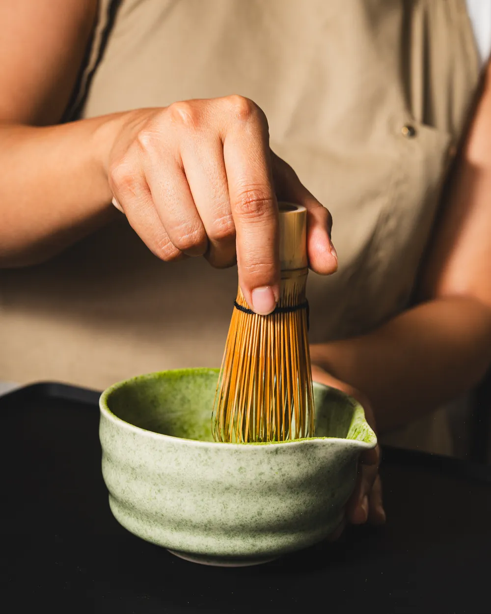
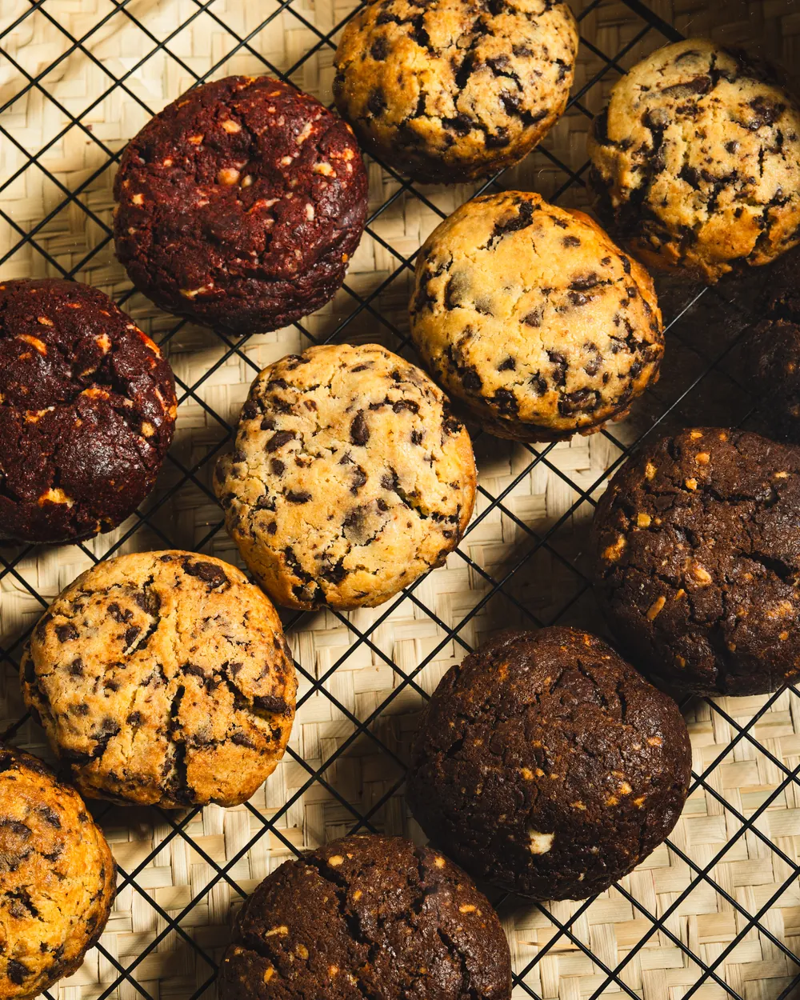
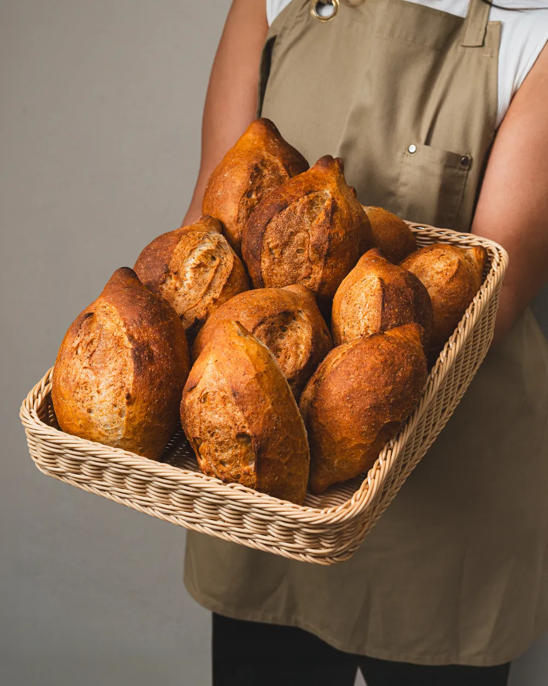
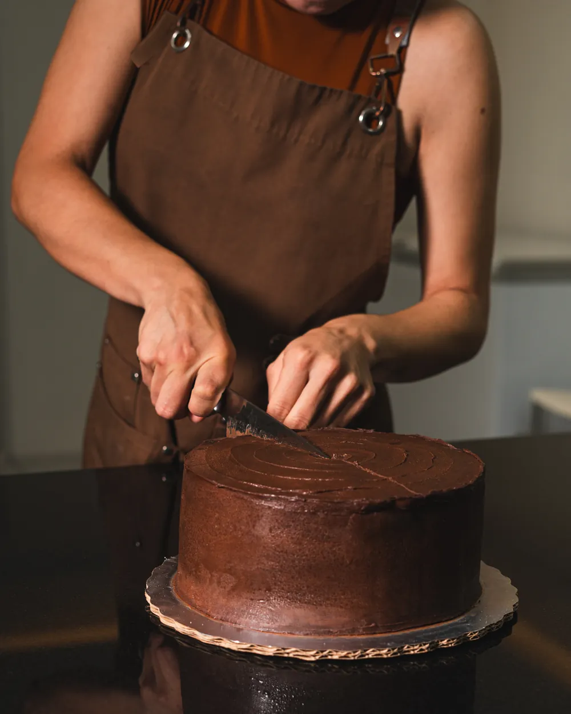

De la barra
El matcha se bate a mano
Uno por uno, con chasen, hasta que la espuma queda pareja. Es más tardado que hacerlo con máquina, y esa es exactamente la razón por la que lo seguimos haciendo así.
Aquí anotamos lo que pasa adentro de la casa: lo que se hornea, lo que se prueba y lo que se repite hasta que sale bien.

Uno por uno, con chasen, hasta que la espuma queda pareja. Es más tardado que hacerlo con máquina, y esa es exactamente la razón por la que lo seguimos haciendo así.

No horneamos todo de una vez. Van saliendo a lo largo del día, y por eso la vitrina de la mañana casi nunca es la misma que la de la tarde. Si buscas una en particular, pregunta antes de venir.

El hojaldre se lamina, descansa, se vuelve a doblar y vuelve a descansar. Cuando por fin entra al horno, el trabajo ya está hecho: lo único que falta es que abra.

Capa, espátula, vuelta. Los pasteles enteros se hacen sobre pedido porque cada uno se termina a mano el día que lo vas a recoger.